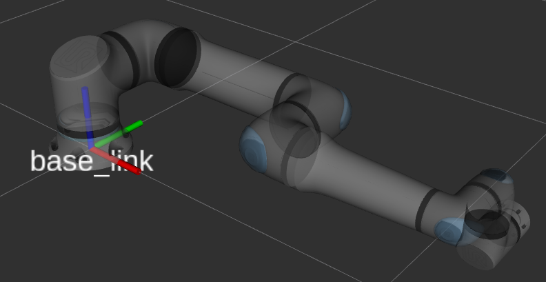
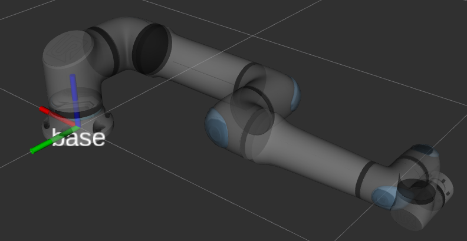

Robot Frames
The URDF model uses multiple frames in the robot’s base. This page describes why that is and what the purpose of each of those frames is. In particular, there are three frames in the robot’s base:
base_link- This serves as the root link of the kinematic chain. It follows REP-103 , where forward for thebase_linkis defined as the direction where the arm is pointing to for an all-zero joint configuration.
Fig. 1 The robot with an all-zeros joint configuration showing its
base_linkframebase- This is the frame that is used by the robot controller to represent the robot’s Base feature (Polyscope 5) / base frame (PolyScope X). It has the same position asbase_linkbut is rotated by 180 degrees around the Z-axis. This follows the REP proposal 199 with respect to the framebaseandtool0.Any lookup of
tool0w.r.t.basewill yield the same result as the pose shown on the teach pendant whenbaseis selected as a reference there and the tool is set to “all-zero” being in the center of the flange.
Fig. 2 The robot with an all-zeros joint configuration showing its
baseframebase_link_inertia- Since some libraries such as KDL don’t support inertia for the root link of a kinematic chain (see ros/kdl_parser#27), thebase_linkdoesn’t contain any meshes or inertia attached to it. Instead, those are attached to thebase_link_inertiaframe. This frame is rotated in the same way asbase.
This leads to the following kinematic chain:
base_link
├ base
└ base_link_inertia
└ shoulder_link
└ upper_arm_link
└ forearm_link
└ wrist_1_link
└ wrist_2_link
└ wrist_3_link
└ flange
└ tool0
The frame tool0 is the tool frame as calculated using forward kinematics. If the robot has an
all-zero tool configured, this should be equivalent to the tool frame on the control box / teach pendant.
The frame flange is supposed to be used to attach custom tool frame or end-effectors to the
robot. For instance, with a gripper’s xacro:macro available, it is often possible to specify a
parent frame, for which flange should be used.
Note
When making TF lookups in the ROS system and comparing that to what the teach pendant shows,
please consider that the robot uses the base frame as reference, not base_link. Also,
make sure that the teach pendant’s view is set to “Base” and that any configured tool will have
an effect on the values.